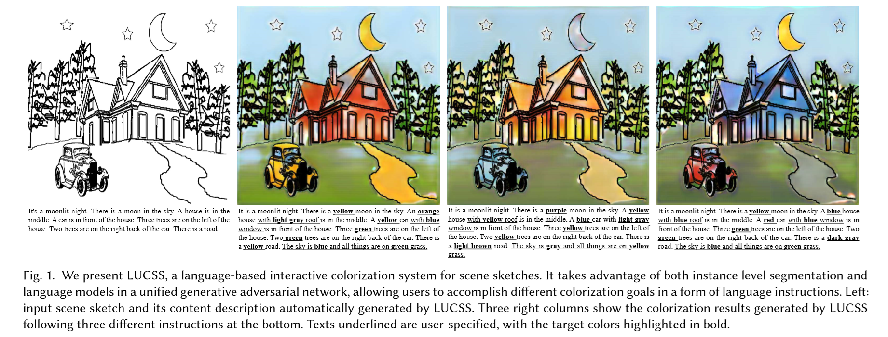
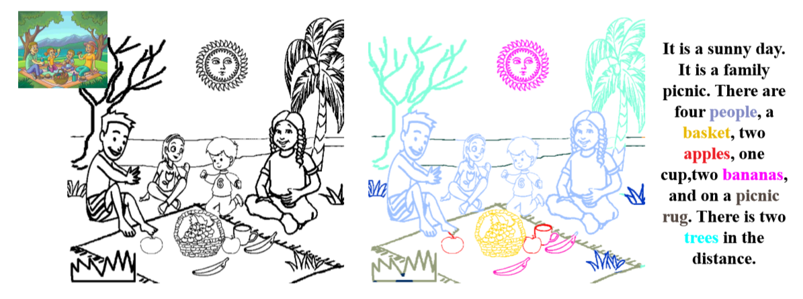

|
Hao-Ran Mo Graduate Student (1st Year) School Of Data and Computer Science, SYSU Guangzhou, China |
||
|
||
|
GitHub | |
||
|
|
|||||||||||
|
A rookie in CS in Sun Yat-sen University (SYSU). I am interested in Computer Vision and Computer Graphics. |
Publications
|  |
Changqing Zou*, Haoran Mo* (joint first author), Ruofei Du, Xing Wu, Chengying Gao and Hongbo Fu
arxiv, 2018
paper | demo | abstract | bibtex We introduce LUCSS, a language-based system for interactive colorization of scene sketches, based on their semantic understanding. LUCSS is built upon deep neural networks trained via a large-scale repository of scene sketches and cartoon-style color images with text descriptions. It consists of three sequential modules. First, given a scene sketch, the segmentation module automatically partitions an input sketch into individual object instances. Next, the captioning module generates the text description with spatial relationships based on the instance-level segmentation results. Finally, the interactive colorization module allows users to edit the caption and produce colored images based on the altered caption. Our experiments show the effectiveness of our approach and the desirability of its components to alternative choices. |
|  |
Changqing Zou*, Qian Yu*, Ruofei Du, Haoran Mo, Yi-Zhe Song, Tao Xiang, Chengying Gao, Baoquan Chen and Hao Zhang
European Conference on Computer Vision (ECCV), 2018
Project Page | paper | github | abstract | bibtex We contribute the first large-scale dataset of scene sketches, SketchyScene, with the goal of advancing research on sketch understanding at both the object and scene level. The dataset is created through a novel and carefully designed crowdsourcing pipeline, enabling users to efficiently generate large quantities realistic and diverse scene sketches. SketchyScene contains more than 29,000 scene-level sketches, 7,000+ pairs of scene templates and photos, and 11,000+ object sketches. All objects in the scene sketches have ground-truth semantic and instance masks. The dataset is also highly scalable and extensible, easily allowing augmenting and/or changing scene composition. We demonstrate the potential impact of SketchyScene by training new computational models for semantic segmentation of scene sketches and showing how the new dataset enables several applications including image retrieval, sketch colorization, editing, and captioning, etc. |